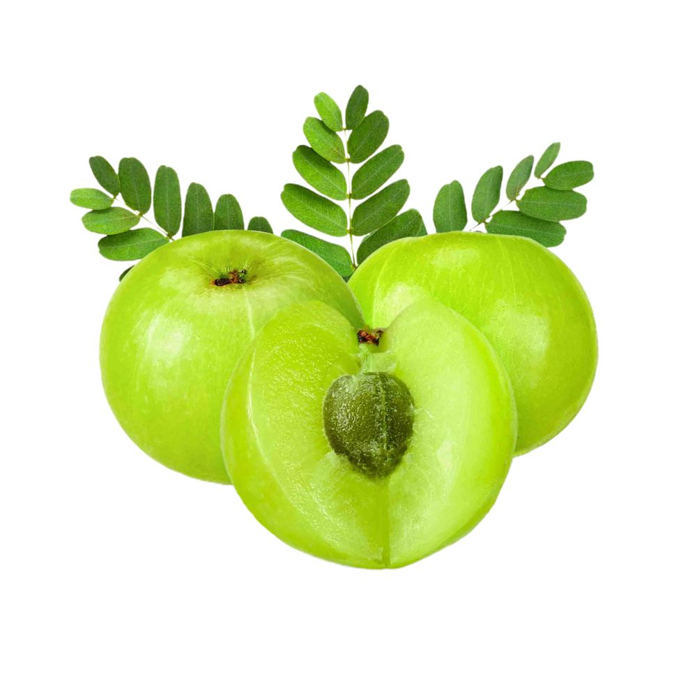

Amla

| Index |
|---|
| Short description |
| Nutritional value |
| Health benefits |
| Best time to eat |
| Who shoud avoid |
| Fun fact |
Short Description
Amla, also known as Indian Gooseberry, is a small, round, light-green fruit widely used in Indian traditional medicine, especially Ayurveda. It has a sour and slightly bitter taste and is consumed raw, dried, or in the form of juice, powder, and pickles. Amla is considered one of the most powerful natural health fruits.
Nutritional Value
| Nutrient | Amount |
|---|---|
| Calories | 44 kcal |
| Carbohydrates | 10 g |
| Dietary Fiber | 4.3 g |
| Vitamin C | 300–600 mg |
| Calcium | 25 mg |
| Iron | 0.3 mg |
| Antioxidants | Very High |
Health Benefits
- Boosts immunity strongly: Extremely rich in vitamin C
- Improves digestion: Stimulates digestive enzymes
- Improves eyesight: Supports eye health
- Enhances hair health: Reduces hair fall and promotes growth
- Controls blood sugar: Helpful for diabetics in moderation
- Detoxifies the body: Cleanses liver and blood
Best Time to Eat
Amla is best consumed early in the morning on an empty stomach. Eating amla in the morning improves digestion, boosts immunity, and helps detoxify the body throughout the day.
Amla can also be consumed:
- As fresh fruit with salt
- As amla juice with warm water
- In powder form
Avoid eating amla late at night, as its strong nature may disturb digestion or cause acidity in some people.
Best practice: Morning + empty stomach + warm water.
Who Should Avoid
- People with hyperacidity, as amla is very sour
- Those with low blood pressure, as amla can lower BP
- People with cold and cough, if consumed in excess
- Post-surgery patients, unless advised by a doctor
Fun Fact
- Amla is considered a “Rasayana” in Ayurveda, meaning it promotes longevity
- It contains more vitamin C than oranges
- Vitamin C in amla is heat-stable, unlike other fruits
- Amla trees can live and bear fruit for several decades